D2A Hovmöller: COMPLETE / CERTIFIED. Maintainer qselmer reviewed the exact governed artifacts on 2026-09-06. Grey = stored NA; blank = no stored centre; tile extent is display-only when authoritative bounds are unavailable; no interpolation.
D2B core maps: COMPLETE / CERTIFIED LOCALLY. Maintainer qselmer approved these exact seven artifacts on 2026-09-07. Grey means stored NA / missing source field support, not inferred land. Contours are renderer-only geometry; contour-only output does not necessarily show the complete support mask. Longitude wrapping is display-only. A composition marker identifies the exact grid location used in its paired child panel.
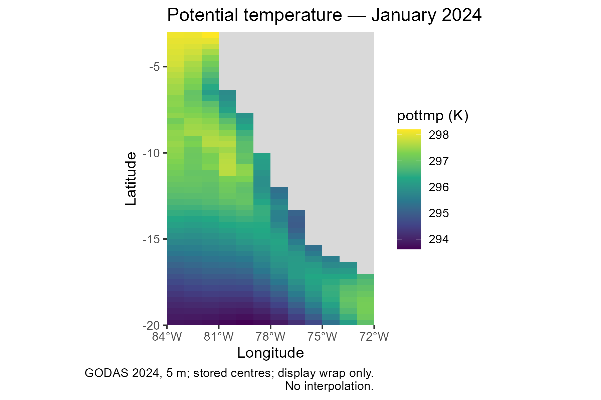
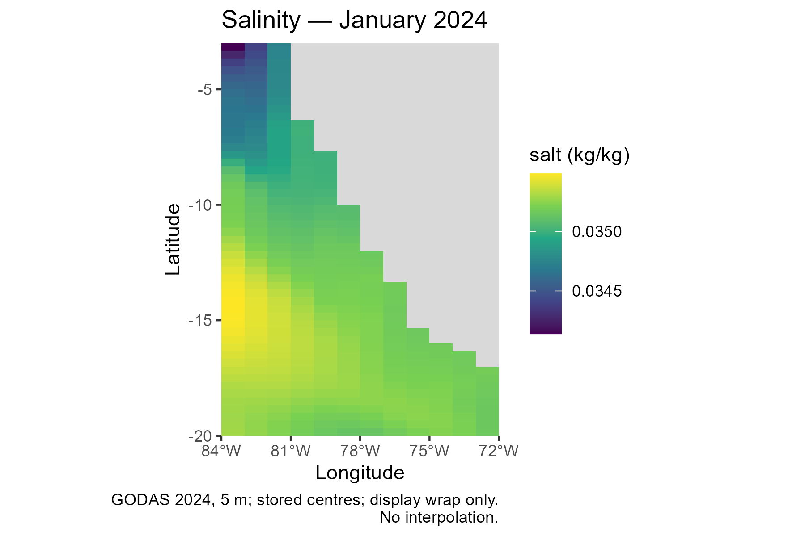
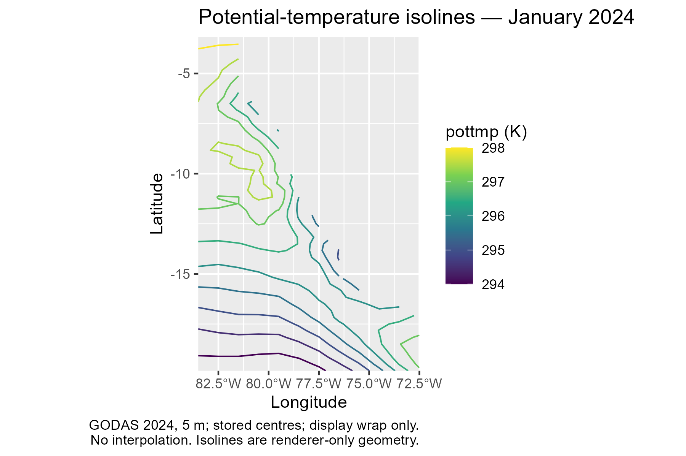
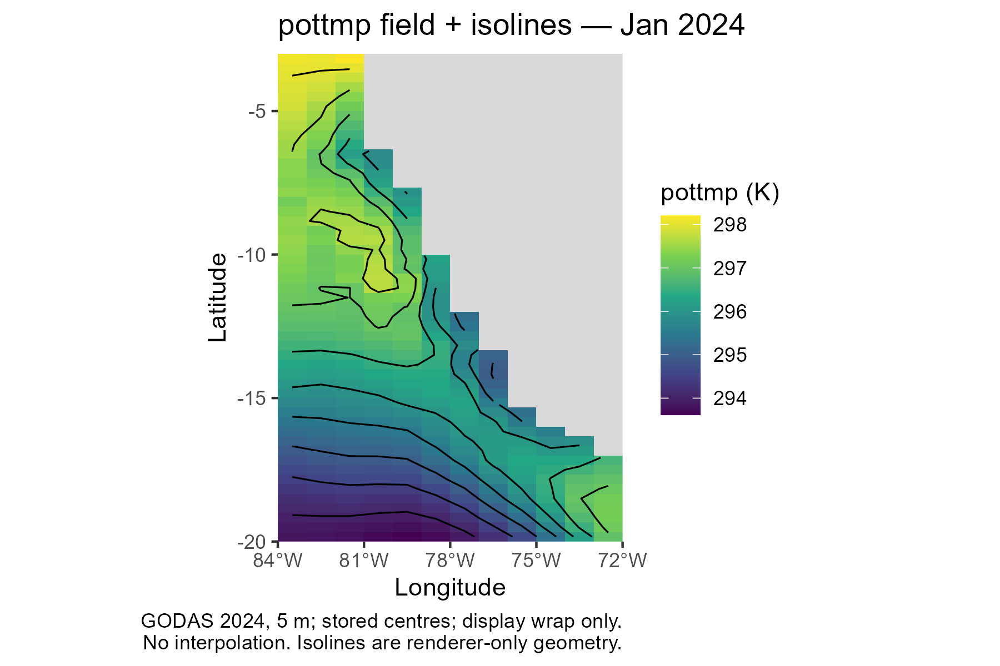
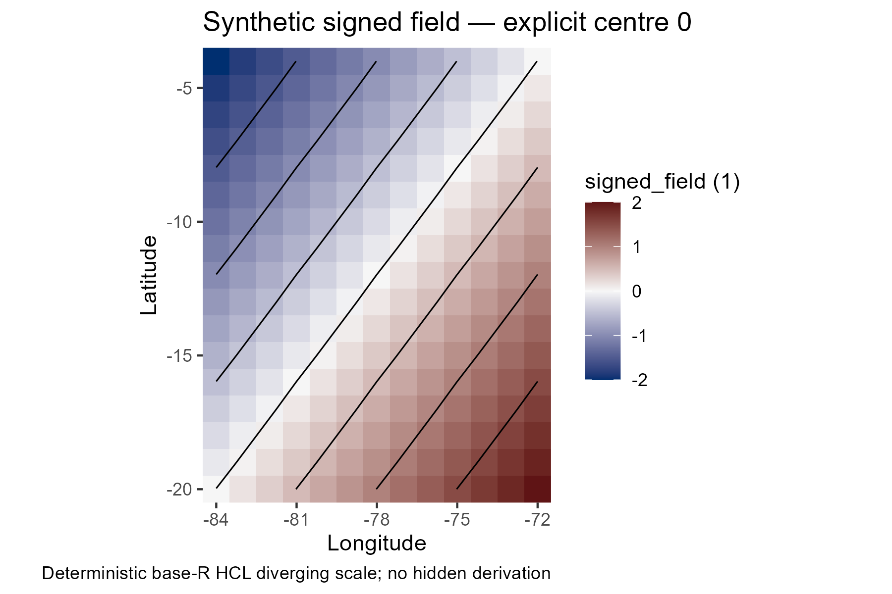
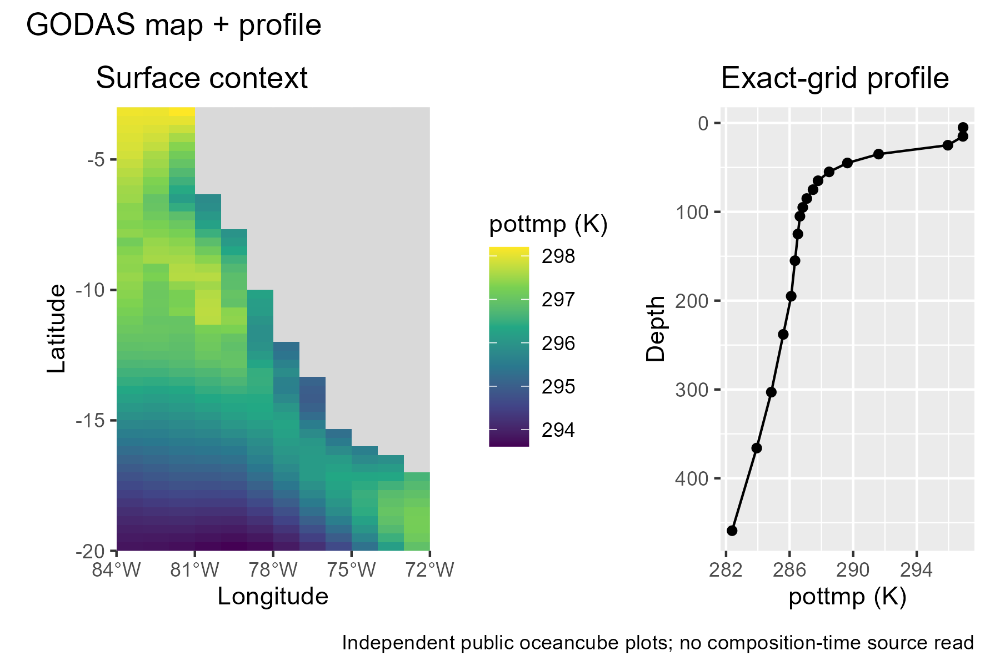
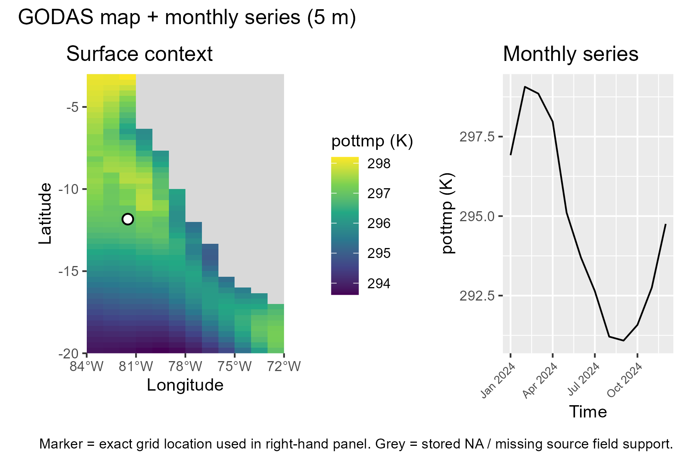
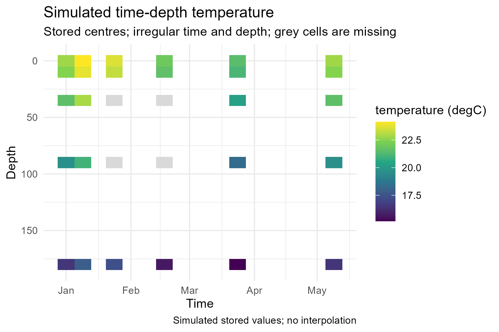
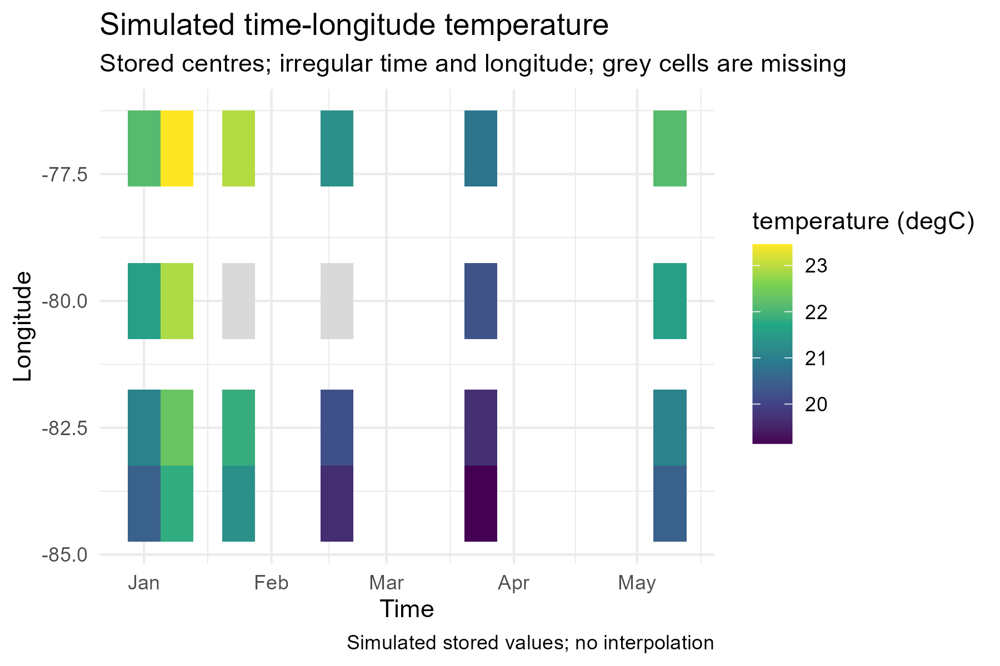
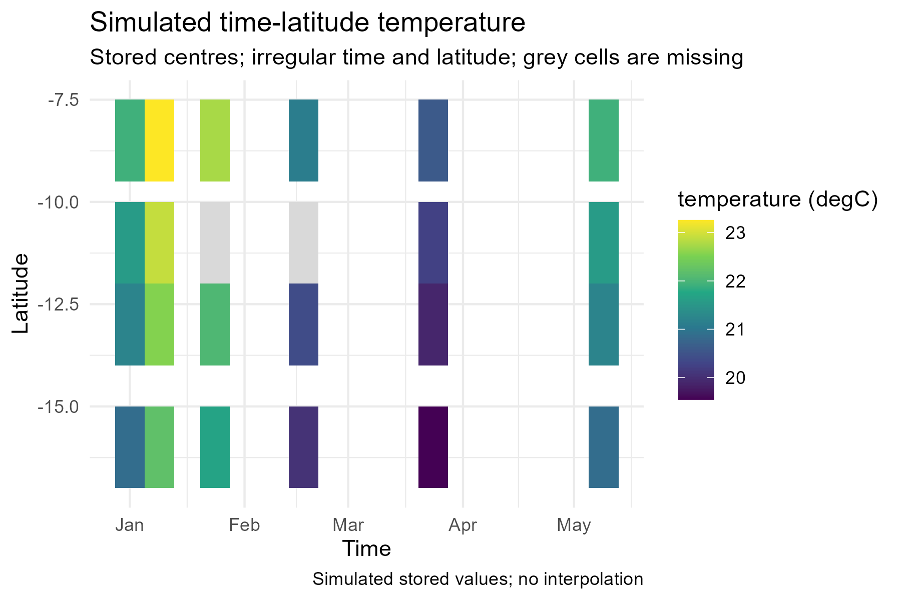
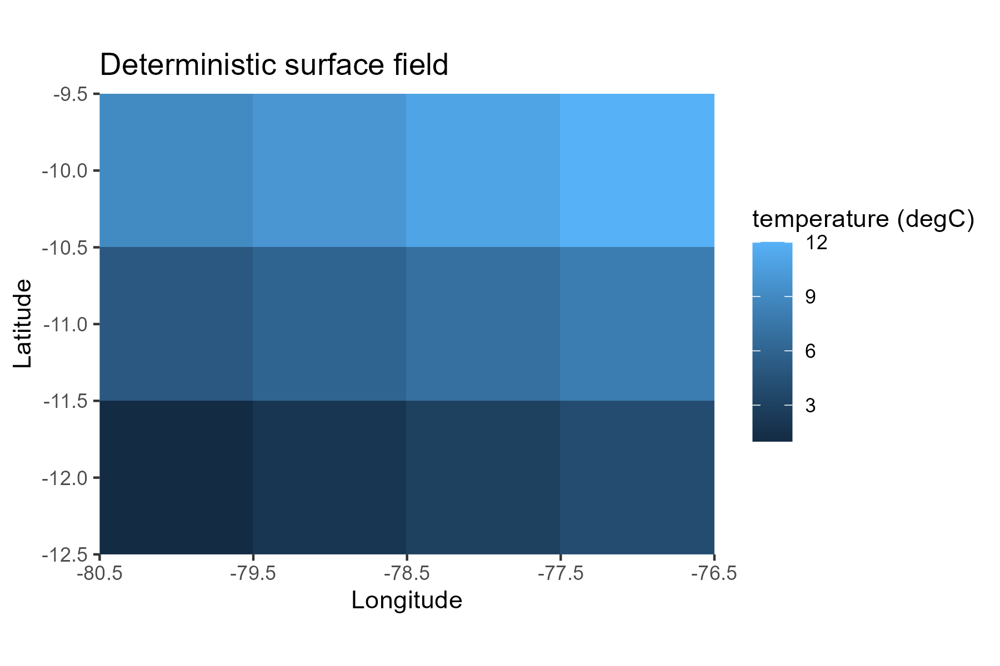
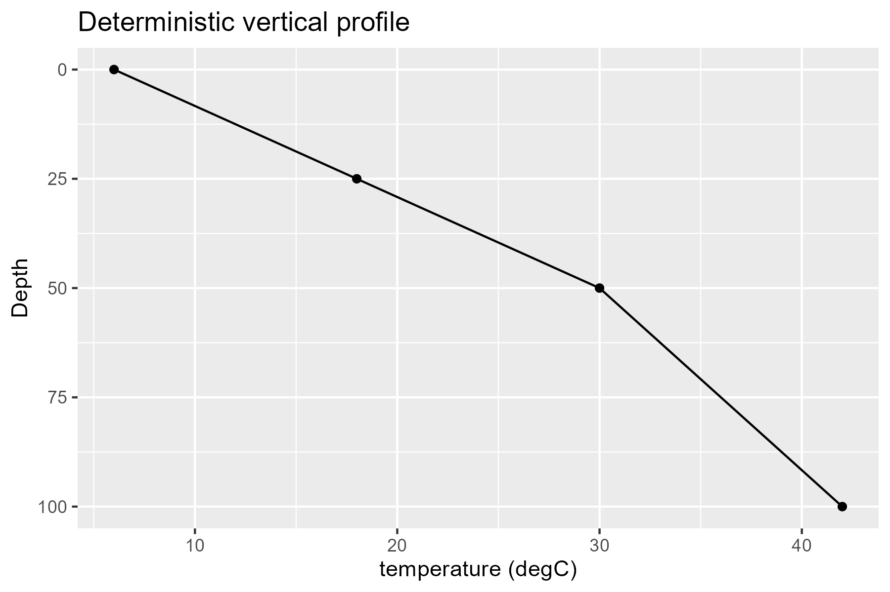
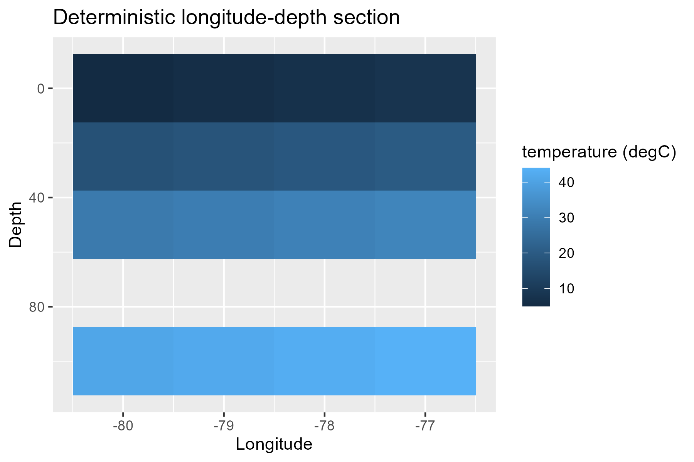
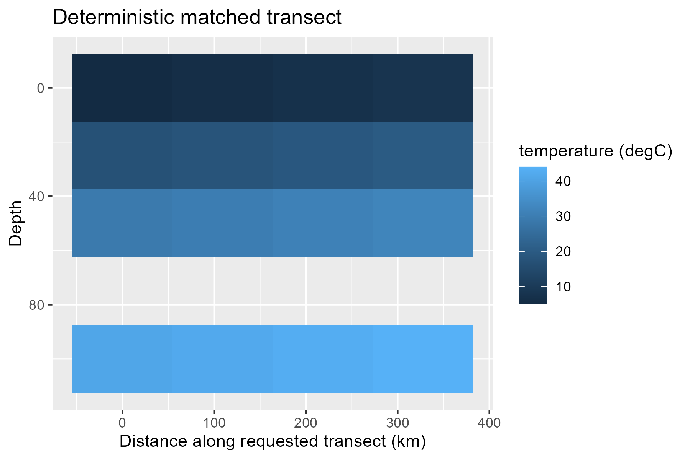
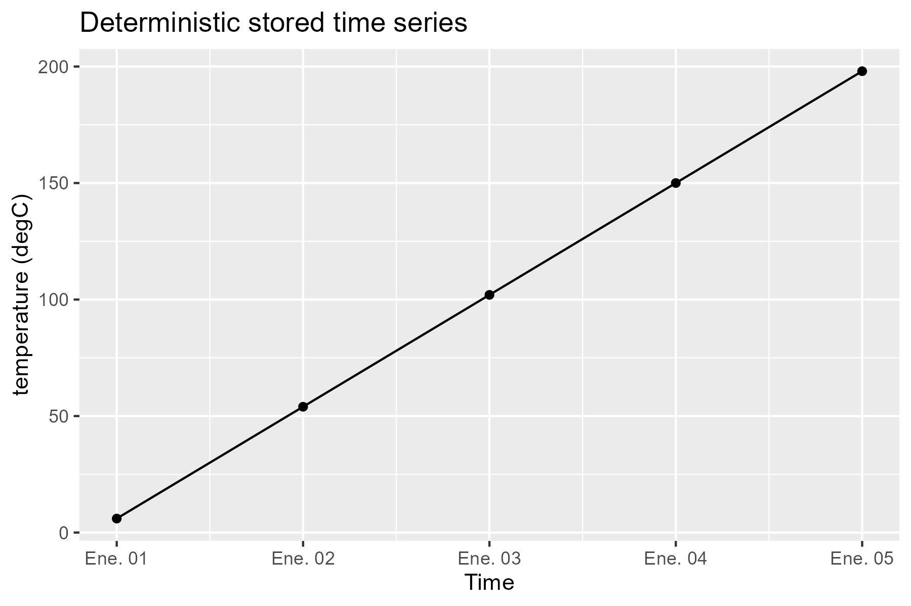